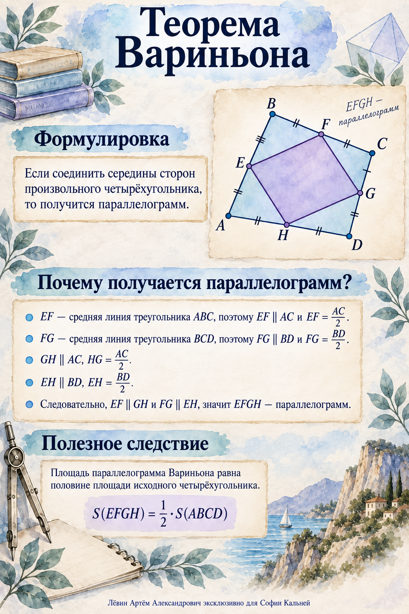

К концу повторения Вы сможете строить корректный чертёж, выделять треугольники, связывать их через параллельность и подобие, применять свойства параллелограмма и восстанавливать площадь исходного четырёхугольника.
01 · структураЧертёж и треугольники
02 · связиПодобие и средние линии
03 · фигурыРомб и параллелограмм
04 · итогПлощади и Вариньон
Главная идея
Ищите треугольники.
Если они скрыты, проведите диагонали.
Читайте параллельность.
Она часто приводит к подобию или средней линии.
Опознавайте фигуры.
Используйте свойства ромба, прямоугольника и параллелограмма.
Связывайте площади.
Выбирайте формулу по известным элементам.
Материал занятия
Визуальная памятка помогает восстановить конструкцию по серединам сторон.

Опорные свойства
Фигуры, которые следует узнавать
Параллелограмм
Противоположные стороны равны и параллельны. Диагонали делятся точкой пересечения пополам.
Ромб
Все стороны равны. Диагонали перпендикулярны, делятся пополам и являются биссектрисами углов.
Прямоугольник
Все углы прямые, диагонали равны.
Средняя линия
Соединяет середины двух сторон треугольника, параллельна третьей стороне и равна её половине.
Подобие
Соответственные углы равны, соответственные стороны пропорциональны. Порядок вершин сохраняется.
Угол 30°
В прямоугольном треугольнике катет против угла 30° равен половине гипотенузы.
Формулы площади
Для параллелограмма со сторонами a, b, высотой h и углом α:
Для выпуклого четырёхугольника с диагоналями d1, d2 и углом φ между ними:
Проверка выбора: угол в последней формуле расположен между диагоналями. Множитель 1/2 обязателен.
Диагонали параллелограмма
Тождество связывает четыре длины. Оно применяется, когда известны три из них.
Алгоритм решения
Прочитать условие и построить правдоподобный чертёж.
Записать данные, искомые величины и ограничения конфигурации.
Выделить треугольники; при необходимости провести диагонали.
Отметить параллельные прямые, середины и прямые углы.
Проверить подобие и наличие специальных четырёхугольников.
Выбрать пропорцию, метрическое тождество или формулу площади.
Проверить длины, углы и взаимное расположение элементов.
Разбор 1
Ромб внутри прямоугольника
Что дано
K лежит на AB, M лежит на CD; AKCM — ромб; диагональ AC образует с AB угол 30°; AB = 3.
Что найти
Сторону ромба.
Смысл условий. Диагональ ромба делит углы пополам, а прямоугольник создаёт прямоугольный треугольник KBC.
Идея решения: получить угол 30° в прямоугольном треугольнике, выразить гипотенузу через короткий катет, затем сложить части стороны AB.
Диагональ AC является биссектрисой углов ромба, поэтому углы KAC и KCA равны 30°.